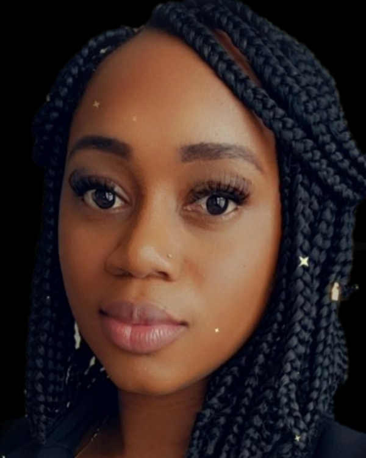

GET TO KNOW YOUR FELLOW STUDENTS:
Kameesha Sylvester Hamilton
(Visit my Github Account)

- What is your name?
Kameesha Sylvester Hamilton
- What did you do before you do before coding?
I worked in Real Estate.
- What is your favorite hobby?
I enjoy Laser Engraving.
- What drives you to succeed?
My Daughter.
- What piece of new technology is super interesting to you?
My new Macbook Pro since this is my first one.
- What are you hoping to gain from this experience?
A new stream of income.
- What about this course do you really enjoy?
Learning to Code.
- What job do you expect to get after course completion?
Web Developer.
- Do you have any children?
Yes, I have one child.
- Do you like dogs, cats or both?
Neither.
Robert Scott
(Visit my Github Account)
- What is your name?
Robert Scott
- What did you do before you do before coding?
I work IT and Systems Administration.
- What is your favorite hobby?
I love reading.
- What drives you to succeed?
The ability to not starve.
- What piece of new technology is super interesting to you?
My home automation hub.
- What are you hoping to gain from this experience?
I would like a career pivot.
- What about this course do you really enjoy?
The class comraderie.
- What job do you expect to get after course completion?
Web Developer.
- Do you have any children?
I have no kids, but I love being an uncle because I can send them back home.
- Do you like dogs, cats or both?
I actually love both.